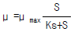
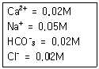
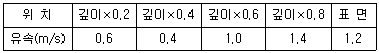

수질환경산업기사 (2004-05-23 기출문제)
1과목: 수질오염개론
1. 적조 발생지역과 가장 거리가 먼 것은?
- 갈수기시 수온, 염분이 급격히 높아진 수역
- 질소, 인등의 영양염류가 풍부한 수역
- upwelling 현상이 있는 수역
- 정체 수역
(정답률: 알수없음)

2. 다음은 세포증식에 관한 식(Monod)이다. 이 식에 대한 설명중 틀린 것은 ?

- μ 는 세포의 비증가율을 말하며, 단위는 g 이다.
- μ max는 세포의 비증가율 최대치를 말한다.
- S는 제한 기질의 농도이며 단위는 g/ℓ 이다.
- Ks는
 일 때의 제한기질의 농도를 말한다.
일 때의 제한기질의 농도를 말한다.
(정답률: 알수없음)
3. 방류수 BOD가 20mg/L 인 하수 100,000m3/day이 하천으로 유입된다. 하천의 유량이 50m3/sec이고 하수 유입전 하천의 BOD는 2mg/L이다. 혼합후의 하천 BOD(mg/L)는?
- 1.4
- 2.4
- 3.4
- 4.4
(정답률: 알수없음)
4. CGS계로 동점성계수를 표시한 차원은? (단, M:질량, L:길이, T:시간 )
- LT-1
- L2T-1
- ML-1T-1
- ML-2T-1
(정답률: 알수없음)
5. 유기물이 많아서 BOD가 높은 물을 상수원으로 사용하는 경우 염소소독할 때 생성되는 발암물질로 알맞는 것은 ?
- PCB(Polychlorinated biphenyl)
- THM(Trihalomethane)
- ABS(Alkylbenzene Sulfonate)
- TKN(Total Kjeldahl Nitrogen)
(정답률: 알수없음)
6. Ca(OH)2 740mg/L 용액의 pH는? (단, Ca(OH)2의 분자량은 74이고 완전해리 한다.)
- 약 12.0
- 약 12.3
- 약 12.6
- 약 12.9
(정답률: 알수없음)
7. 황산바륨 포화용액에 염화바륨을 첨가하여 침전을 유도하는 방법과 가장 관계가 깊은 것은?
- 공통이온효과
- 상승작용
- 완충작용
- 이종이온효과
(정답률: 알수없음)
8. pH 2인 용액은 pH 5인 용액보다 몇 배 더 산성인가?
- 3
- 300
- 1000
- 5000
(정답률: 알수없음)
9. 0.02N의 초산이 4% 해리되어 있다면 이 수용액의 pH는?
- 3.1
- 3.4
- 3.7
- 3.9
(정답률: 알수없음)
10. 가장 간단한 식물로서 용해된 유기물 섭취하며 생물학적 수처리에서 가장 중요한 미생물은 ?
- rotifer
- fungi
- ciliate
- bacteria
(정답률: 알수없음)
11. 2g의 NaOH를 물에 용해시켜 전량을 250㎖로 하였다면 이 용액의 N농도는? (단, Na원자량: 23)
- 0.1
- 0.2
- 0.3
- 0.4
(정답률: 알수없음)
12. 일반적으로 물속의 용존산소(DO)농도가 증가하게 되는 경우는 ?
- 수온이 낮고 기압이 높을 때
- 수온이 낮고 기압이 낮을 때
- 수온이 높고 기압이 높을 때
- 수온이 높고 기압이 낮을 때
(정답률: 알수없음)
13. Mg(OH)2의 용해도적은 3.4 × 10-11 이다. 물에 대한 Mg(OH)2의 용해도를 g/ℓ 로 구하면?(단, Mg:24, O:16, H:1)
- 1.96 × 10-2 g/ℓ
- 1.48 × 10-2 g/ℓ
- 1.18 × 10-2 g/ℓ
- 1.02 × 10-2 g/ℓ
(정답률: 알수없음)
14. 어떤 하천수의 수온은 10℃이다. 20℃의 탈산소계수 K(상용대수)가 0.15/day일 때 최종 BOD에 대한 BOD6의 비는? (단, KT = K20×1.047(T-20), BOD6/최종BOD )
- 0.53
- 0.63
- 0.73
- 0.83
(정답률: 알수없음)
15. 다음 수역 중 일반적으로 자정계수(f)가 가장 큰 것은 ?
- 폭포
- 조그만 연못
- 완만한 하천
- 유속이 빠른 하천
(정답률: 알수없음)
16. 친수성 콜로이드(Colloid)의 특성에 관한 설명으로 알맞지 않는 것은 ?
- 표면장력과 점도는 분산매와 큰 차이가 없다.
- Tyndall 효과는 작거나 전무하다.
- 전해질에 대한 반응은 활발하며 많은 응집제를 필요로 한다.
- 물리적상태는 에멀션상태이다.
(정답률: 알수없음)
17. 빗물의 특성에 대한 내용과 가장 거리가 먼 것은?
- 빗물은 낙하하면서 대기중의 CO2를 포화상태로 녹여 순수한 빗물의 pH를 약 5.6으로 만든다.
- 일반적으로 빗물은 용해성분이 많아 경수이며 완충 작용이 강하다.
- SO2나 NO2 같은 기체가 빗물에 녹아 H2SO4 와 HNO3가 되어 산성비를 만든다.
- 수자원으로서 부정기적인 강우패턴과 집수· 저장방법 문제로 가치가 비교적 크지 않은 편이다.
(정답률: 알수없음)
18. 페놀(C6H5OH) 500mg/L의 이론적인 COD(mg/L)는?
- 594
- 1191
- 1592
- 2838
(정답률: 알수없음)
19. 농업용수 수질의 척도인 SAR을 구할 때 포함되지 않는 항목은 ?
- Ca
- Mg
- Na
- Mn
(정답률: 알수없음)
20. 하천의 수질이 다음과 같을 때 이 물의 이온강도는?

- 0.⑤5
- 0.065
- 0.075
- 0.085
(정답률: 알수없음)
2과목: 수질오염방지기술
21. 활성슬러지공정중 최종침전조에서 슬러지가 부상하는 원인과 가장 거리가 먼 것은?
- 탈질소화 현상이 발생할 때
- 침전조의 수면적 부하가 높은 경우
- SVI가 높고 잉여슬러지의 인출량이 부족할 때
- 폭기조의 폭기량을 감소시켜 질산화 정도를 감소시킬 때
(정답률: 알수없음)
22. 다음의 물리화학적 처리방법중 수중의 암모니아성 질소의 효과적 제거방법과 가장 거리가 먼 것은 ?
- Alum 주입
- Break point 염소주입법
- Zeolite 이용법
- 탈기법
(정답률: 알수없음)
23. 다음 액체염소의 주입으로 생성된 유리염소, 결합잔류염소의 살균력이 바르게 나열된 것은?
- HOCl ＞ Chloramines ＞ OCl-
- HOCl ＞ OCl- ＞ Chloramines
- Chloramines ＞ OCl- ＞ HOCl
- OCl- ＞ HOCl ＞ Chloramines
(정답률: 알수없음)
24. 어떤 폐수를 활성슬러지 법으로 처리하기 위하여 실험을 행한결과, BOD를 50% 제거하는데 4시간30분이 걸렸다. BOD의 감소속도가 1차 반응속도에 따른다면 BOD를 90%까지 제거하는데 필요한 폭기 시간은?
- 약 9시간
- 약 12시간
- 약 15시간
- 약 18시간
(정답률: 알수없음)
25. 정수 공정에서 이산화염소를 사용시 장점이라 볼 수 없는 것은?
- THMs이 형성되지 않는다
- 철,망간,브롬화합물을 산화시킨다
- 소독력이 pH 영향을 크게 받지 않는다
- 페놀류 화합물 제거에 이용된다
(정답률: 알수없음)
26. SVI가 180 일 때의 포기조로의 반송슬러지의 농도는 ?
- 약 5,500mg/ℓ
- 약 6,500mg/ℓ
- 약 7,500mg/ℓ
- 약 8,500mg/ℓ
(정답률: 알수없음)
27. 미생물의 고정화를 위한 팰렛(Pellet)재료로서 이상적인 요구조건에 해당되지 않는 것은?
- 처리,처분이 용이할 것
- 압축강도가 높을 것
- 암모니아 분배계수가 낮을 것
- 고정화시 활성수율과 배양후의 활성이 높을 것
(정답률: 알수없음)
28. 유량이 400,000 m3/day 이고 BOD는 1.2 ㎎/ℓ 인 하천에 인구 15만명의 도시에서 50,000m3/day의 하수가 발생하고 1인당 1일 BOD 배출 원단위를 50g 이라고 가정할 때 하수 처리장을 건설하여 BOD 제거율을 얼마로 해야 처리된 하수가 하천으로 유입된 후(완전혼합으로 가정) BOD를 3.0ppm을 유지하겠는가?
- 88.5%
- 92.5%
- 95.5%
- 98.5%
(정답률: 알수없음)
29. 세포물질(VSS)의 실험적인 분자식이 C5H7O2N이라 할 때 gCOD/gVSS의 값은? (단, C5H7O2N는 이산화탄소, 물, 암모니아로 분해함)
- 0.74
- 1.42
- 2.68
- 3.50
(정답률: 알수없음)
30. 혐기성 조건하에서 100g 의 C6H12O6(glucose)로 부터 발생 가능한 CH4가스의 용적은? (단, 표준상태 기준)
- 37.3ℓ
- 49.5ℓ
- 52.3ℓ
- 67.2ℓ
(정답률: 알수없음)
31. 직경 1.8m, 원판 295매를 사용한 회전원판 반응조가 있다 BOD 200 mg/L, 유량 250 m3/day인 폐수를 회전원판법으로 처리할 경우 BOD 면적 부하량은? (단, 원판은 양면모두 사용함)
- 33.3 g/m2-day
- 42.4 g/m2-day
- 57.9 g/m2-day
- 61.2 g/m2-day
(정답률: 알수없음)
32. 다음중 보통 음이온교환수지에 대해서 가장 일반적인 음이온의 선택성 순서가 바르게 나열된 것은?
- SO42-＞ I- ＞ NO3- ＞ CrO42- ＞ Br- ＞ Cl- ＞OH-
- Cl- ＞ OH- ＞ SO42- ＞ I- ＞ NO3-＞ CrO42- ＞ Br-
- NO3- ＞ SO42- ＞ I- ＞ CrO42- ＞ Br- ＞ Cl- ＞OH-
- I- ＞ NO3- ＞ CrO42- ＞ SO42- ＞ Br- ＞ Cl- ＞OH-
(정답률: 알수없음)
33. 500m3의 폐수중 부유물질농도가 200mg/L일 때 처리효율이 70%인 처리장에서 발생슬러지량(m3)은? (단, 부유물질처리만을 기준으로 하며 기타조건을 고려하지 않음, 슬러지 비중:1.03, 함수율 95%)
- 1.36
- 2.36
- 3.36
- 4.36
(정답률: 알수없음)
34. 폭기조내의 MLSS가 6000mg/L, 폭기조 용적이 500m3인 활성슬러지법에서 매일 30m3의 폐슬러지를 뽑아 소화조로 보내 처리한다면 세포의 평균체류시간은 ? (단, 반송슬러지의 농도는 2%, 비중은 1.0, 유출수내 SS 농도 고려안함 )
- 2일
- 3일
- 4일
- 5일
(정답률: 알수없음)
35. 응집제를 폐수에 첨가하여 응집처리할 경우 완속교반을 하는 주 목적은 ?
- 응집제가 폐수에 잘 혼합되도록 하기 위해서
- 유기질 입자와 미생물의 접촉을 빨리하기 위하여
- 응집된 입자의 플록(floc)화를 촉진하기 위하여
- 입자를 미세화 하기 위하여
(정답률: 알수없음)
36. 부피가 5000m3인 탱크에서 G(평균속도 경사) 값을 30/s로 유지하기 위해 필요한 이론적 소요동력(W)은? (단, 물의 점성은 1.139× 10-3Nㆍs/m2)
- 5126W
- 7651W
- 8543W
- 9218W
(정답률: 알수없음)
37. 탈질소공정에 관한 내용과 가장 거리가 먼 것은?
- 탈질소공정은 주로 자가영양균에 의해 발생된다.
- 탈질소를 위해서는 내부 탄소원이나 메탄올을 이용할 수 있다.
- 탈질소는 질산염질소를 보다 더 환원된 형태로 바꾸는 생물학적 전환 공정이다.
- 탈질소반응이 지체없이 진행되기 위해서는 적당한 수소공여체가 적당량으로 존재하여야 한다.
(정답률: 알수없음)
38. 하루 5,000m3 폐수를 처리할 수 있는 폭기조를 시공하고자 한다. 폭기조내 산기관 1개당 300ℓ /min의 공기를 공급할 때 필요한 산기관 개수는? (단, 폭기조 용적당 공기 공급량은 1.8m3/m3· hr, 폭기조 체류시간 18hrs 이다. )
- 235
- 275
- 335
- 375
(정답률: 알수없음)
39. 유입수의 BOD 농도가 540 mg/ℓ 인 폐수를 폭기시간 8시간 F/M비를 0.3으로 처리 하고자 한다면 유지되어야 할 MLSS의 농도(mg/ℓ )은?
- 5100 mg/ℓ
- 5400 mg/ℓ
- 5700 mg/ℓ
- 5900 mg/ℓ
(정답률: 알수없음)
40. 생물학적으로 인을 제거하는 3차처리 공법중 A/O공정에 관한 설명으로 틀린 것은?
- 무산소조-폭기조로 이루어져 있다.
- 폐슬러지내의 인의 함량은 비교적 높아 비료 가치가 있다.
- 인 제거율은 시스템내의 SRT가 중요한 변수가 된다.
- 기온이 낮을 때 운전 성능이 불확실하다.
(정답률: 알수없음)
3과목: 수질오염공정시험방법
41. 수심이 0.3m 인 하천에서 유속을 측정하여 다음 자료를 얻었다. 그 지점에서의 깊이에 대한 평균유속은 ?

- 0.6 m/s
- 0.8 m/s
- 1.0 m/s
- 1.2 m/s
(정답률: 알수없음)
42. 시료의 채취량은 시험항목 및 시험회수에 따라 차이가 있으나 일반적으로 어느 정도가 적당한가 ?
- 1 ~ 2 L
- 2 ~ 3 L
- 3 ~ 5 L
- 5 ~ 7 L
(정답률: 알수없음)
43. 다음 중 흡광광도법에서 자외부 파장범위에 이용되는 흡수셀의 재질은 ?
- 유리
- 석영
- 플라스틱
- 비닐
(정답률: 알수없음)
44. 농도표시에 관한 설명 중 틀린 것은 ?
- 십억분율을 표시할 때는 μ g/L, ppb의 기호로 쓴다.
- 천분율을 표시할 때는 g/L, ‰ 의 기호로 쓴다.
- 용액의 농도는 %로만 표시할 때는 V/V%, W/W%를 나타낸다.
- 용액 100g중 성분용량(mL)을 표시할 때는 V/W%의 기호로 쓴다.
(정답률: 알수없음)
45. 배출허용기준 적합여부 판정을 위한 시료채취시, 수소 이온농도, 수온등 현장에서 즉시 측정분석하여야 하는 항목인 경우의 측정분석치 산출방법기준은? (단, 복수시료채취 방법기준)
- 30분이상 간격으로 4회이상 측정분석한 후 산술평균 하여 측정분석치를 산출한다.
- 30분이상 간격으로 2회이상 측정분석한 후 산술평균 하여 측정분석치를 산출한다.
- 1시간이상 간격으로 4회이상 측정분석한 후 산술평균 하여 측정분석치를 산출한다.
- 1시간이상 간격으로 2회이상 측정분석한 후 산술평균 하여 측정분석치를 산출한다.
(정답률: 알수없음)
46. 다음 설명 중 틀린 것은 ?
- 항량이란 30분 더 건조하거나 강열할 때 전후 무게의 차가 매 g당 0.3mg이하 일 때를 말한다.
- 액의 농도를 (1→ 10)으로 표시한 것은 고체 1g을 용매에 녹여 전체량을 10㎖로 하는 비율을 표시한 것이다.
- HCl(1+2)로 표시한 것은 물 2㎖에 HCl 1㎖를 혼합 조제한 것이다.
- 3% NaOH용액은 일반적으로 용액 100㎖중에 수산화나트륨이 3g 녹아있는 것을 말한다.
(정답률: 알수없음)
47. 중크롬산칼륨에 의한 COD 측정시 가열후 소비된 중크롬산칼륨의 양을 구하기 위해 환원되지 않고 남아 있는 중크롬산칼륨에 가하는 적정액은?
- 수산나트륨용액
- 티오황산나트륨용액
- 수산화나트륨용액
- 황산제일철암모늄용액
(정답률: 알수없음)
48. 시안 화합물을 측정할 때 pH 2 이하의 산성에서 에틸렌디아민테트라 초산이나트륨을 넣고 가열증류하는 이유는?
- 킬레이트 화합물을 발생시킨 후 침전시켜 중금속 방해를 방지하기 위하여
- 시료에 포함된 유기물 및 지방산을 분해시키기 위하여
- 시안화물 및 시안착화합물의 대부분을 시안화수소로 유출시키기 위하여
- 시안화합물의 방해성분인 황화합물을 유화수소로 분리시키기 위하여
(정답률: 알수없음)
49. 가스크로마토그래피법의 정성분석을 위해 머무름값 측정시 반복 오차범위 기준으로 적절한 것은?
- ± 0.5% 범위이내
- ± 0.1% 범위이내
- ± 3% 범위이내
- ± 5% 범위이내
(정답률: 알수없음)
50. 수질오염공정시험법상 가스크로마토그래피법으로 분석할 수 있는 항목은?
- 수은
- 총질소
- 알킬수은
- 아연
(정답률: 알수없음)
51. 윙클러-아지드화나트륨변법으로 DO측정할 때 지시약 투입 후 적정 종말점 색은?
- 청색
- 무색
- 황색
- 홍색
(정답률: 알수없음)
52. 흡광광도법에 관한 설명중 옳지 않은 것은?
- 측정 파장범위는 200~900nm 이다.
- 흡광도는 용액의 농도에 비례한다.
- 자외부의 광원으로 텅스텐램프를 사용한다.
- 투과도 역수의 상용대수를 흡광도라 한다.
(정답률: 알수없음)
53. 수중의 중금속에 대한 정량을 원자흡광광도법에 의해 측정할 경우 대상 시료가 공존 물질과 작용해서 해리되기 어려운 화합물이 생성되어 흡광에 관계하는 바닥상태의 원자수가 감소되는 간섭 현상이 발생되었다면 다음중 이 간섭을 피하기 위한 방법이 아닌 것은?
- 과량의 간섭원소의 첨가
- 은폐제나 킬레이트제의 첨가
- 이온화 전압이 높은 원소를 첨가
- 목적원소의 용매 추출
(정답률: 알수없음)
54. 하천수 채수방법 중 옳지 않은 것은 ?
- 하천수의 오염 및 용수의 목적에 따라 채수지점을 선정한다.
- 하천 합류지점에서는 합류전의 각지점과 합류후 충분히 혼합된 지점에서 각각 채수한다.
- 하천 단면에서 수심이 가장 깊은 수면의 지점과 그 지점을 중심으로 하여 좌우로 수면폭을 2 등분한 각각의 지점의 수면으로 부터 수심 2m 미만일 때에는 수심의 1/3에서 각각 채수한다.
- 하천 단면에서 수심이 가장 깊은 수면의 지점과 그 지점을 중심으로 하여 좌우로 수면폭을 2 등분한 각각의 지점의 수면으로 부터 수심 2m 이상일 때에는 수표면, 수심 1/3, 2/3 지점에서 각각 채수한다.
(정답률: 알수없음)
55. 항목별 시료 보존방법이 틀린 것은?
- 부유물질: 4℃보관
- 총인: 황산으로 pH2 이하, 4℃보관
- 색도: 4℃보관
- 인산염인: 염산으로 pH2 이하, 4℃보관
(정답률: 알수없음)
56. 염소이온을 측정하기 위한 질산은 적정법에서 적정 종말점으로 가장 적절한 것은?
- 엷은 황갈색 침전
- 엷은 청회색 침전
- 엷은 적황색 침전
- 엷은 청록색 침전
(정답률: 알수없음)
57. 가스크로마토그래프에 사용하는 검출기에 관한 설명으로 틀린 것은?
- 전자포획형검출기는 유기질소 및 유기염소화합물을 선택적으로 검출할 수 있다
- 불꽃광도형검출기는 인 또는 황화합물을 선택적으로 검출할 수 있다
- 열전도도 검출기는 금속필라멘트를 검출소자로 한다
- 불꽃열이온화검출기는 불꽃이온화검출기에 알칼리 또는 알칼리토류 금속류의 튜브를 부착한 것이다
(정답률: 알수없음)
58. 채취된 시료수에 다량의 점토질 또는 규산염을 함유한 시료의 적용되는 전처리 방법은 ?
- 질산 - 황산에 의한 분해
- 질산 - 과염소산 - 불화수소산에 의한 분해
- 질산 - 황산 - 과염소산에 의한 분해
- 회화에 의한 분해
(정답률: 알수없음)
59. 이온 전극법의 특징으로 알맞지 않은 것은?
- 이온농도의 측정범위는 일반적으로 10-1mol/L∼10-4mol/L (또는 10-7mol/L) 이다.
- 측정용액의 온도가 10℃ 상승하면 전위구배는 1가 이온이 약 1mV, 2가 이온이 약 2mV 변화한다.
- 이온전극의 종류나 구조에 따라 사용 가능한 pH 범위가 있다.
- 시료용액의 교반은 이온전극의 전극범위, 응답속도, 정량하한값에 영향을 나타낸다.
(정답률: 알수없음)
60. 페놀류 시험법에서 사용하는 시약이 아닌 것은?
- 염화암모늄 - 암모니아 완충액
- 피리딘 피라졸론액
- 4-아미노 안티피린
- 페리시안 칼륨
(정답률: 알수없음)
4과목: 수질환경관계법규
61. 유역환경청장 또는 지방환경청장이 교육대상자를 선발하여야 할 교육과정으로 적절한 것은?
- 환경관리인 과정
- 폐수분석기술요원과정
- 폐수처리장 관리자과정
- 폐수처리기술요원과정
(정답률: 알수없음)
62. 법적으로 규정된 환경관리인의 관리사항으로 알맞지 않는 것은?
- 환경오염방지를 위하여 환경부장관이 지시하는 사항
- 배출시설 및 방지시설의 관리에 관한 사항
- 배출시설 및 방지시설의 개선에 관한 사항
- 배출시설 및 방지시설의 운영에 관한 기록부의 기록, 보존에 관한 사항
(정답률: 알수없음)
63. 종말처리시설종류별 배수설비의 설치방법 및 구조기준에 관한 설명중 옳지 않은 것은 ?
- 배수관경은 150mm 이상으로 한다.
- 배수관은 우수관과 분리하여 설치한다.
- 배수관입구에는 유효간격 5mm 이하의 스크린을 설치한다.
- 유량계 및 각종 계량기 설치는 배수설비의 부대시설로 본다.
(정답률: 알수없음)
64. 부과권자가 과태료를 부과하고자 할 때에는 며칠 이상의 기간을 정하여 과태료처분 대상자에게 구술 또는 서면에 의한 의견진술의 기회를 주어야 하는가?
- 7일
- 10일
- 15일
- 30일
(정답률: 알수없음)
65. 지정호소수질보전계획에 포함될 사항과 가장 거리가 먼것은?
- 지정호소의 수질보전을 위한 수질관리기본대책
- 하수도등의 정비 기타 지정호소수질보전사업에 관한사항
- 지정호소지역설정기준 및 범위에 관한 사항
- 지정호소의 준설, 조류제거 및 수면청소등에 관한사항
(정답률: 알수없음)
66. 환경부령으로 정하는 수로라 볼 수 없는 것은 ?
- 지하수로
- 상수관거
- 농업용수로
- 운하
(정답률: 알수없음)
67. 폐수종말처리기설 방류수수질기준 중 화학적산소요구량 기준으로 알맞는 것은?(단, 2007.12.31까지 기준, 농공단지 기준)
- 30 mg/ℓ 이하
- 40 mg/ℓ 이하
- 50 mg/ℓ 이하
- 60 mg/ℓ 이하
(정답률: 알수없음)
68. 다음중 낚시금지 또는 제한구역 지정시 고려사항으로 가장 먼 것은?
- 호소의 이용목적
- 오염원 현황
- 호소 인근 인구현황
- 수중생태계 현황
(정답률: 알수없음)
69. 환경부장관이 공공수역의 수질오염방지를 위하여 시,도지사,시장,군수,구청장으로 하여금 관할구역내 폐수종말 처리시설등에서 유출되는 물에 정하는 수질기준은?
- 수질환경기준
- 지역환경수질기준
- 방류수수질기준
- 배출허용수질기준
(정답률: 알수없음)
70. 배출시설로부터 배출되는 오염물질의 공동처리를 위하여 설치하는 공동방지시설의 설치 주체는?
- 사업자
- 지방자치단체장
- 시,도지사
- 환경부장관
(정답률: 알수없음)
71. 사업장 규모별 구분이 잘못된 것은 ?
- 1일 폐수배출량이 3,000m3인 사업장 - 1종사업장
- 1일 폐수배출량이 800m2인 사업장 - 2종사업장
- 1일 폐수배출량이 600m2인 사업장 - 3종사업장
- 1일 폐수배출량이 30m3인 사업장 - 4종사업장
(정답률: 알수없음)
72. 사업자가 폐수처리방법이 물리적 또는 화학적 처리방법인 방지시설의 가동개시 신고를 한 후 몇 일이내에 배출시설에서 배출되는 오염물질이 배출허용기준이하로 처리될 수 있도록 운영(시운전기간)하여야 하는가 ?
- 30일
- 50일
- 60일
- 70일
(정답률: 알수없음)
73. 수질오염방지시설에 대한 분류중 생물화학적 처리시설이 아닌 것은?
- 안정조
- 폭기시설
- 살균시설
- 산화시설(산화조 또는 산화지)
(정답률: 알수없음)
74. 초과부과금 부과대상 오염물질이 아닌 것은?
- 테트라클로로에틸렌
- 트리클로로에틸렌
- 디클로로에틸렌
- 총인
(정답률: 알수없음)
75. 수질오염 측정망 설치계획의 고시에 포함되지 않는 것은?
- 측정대상 오염물질 항목
- 측정망 설치시기
- 측정소를 설치할 토지 또는 건축물의 위치 및 면적
- 측정망 배치도
(정답률: 알수없음)
76. 수질 환경기준 하천 Ⅱ등급의 기준 중 맞는 것은?
- 용존산소량 : 5㎎/ℓ 이하
- 생물화학적 산소요구량 : 6㎎/ℓ 이하
- 수소이온 농도 : 6.5-8.0
- 부유물질량 : 25㎎/ℓ 이하
(정답률: 알수없음)
77. 골프장안의 잔디 및 수목등에 맹,고독성 농약을 사용한자에 대한 벌칙으로 적절한 것은?
- 100만원 이하의 과태료
- 1천만원 이하의 과태료
- 1년이하의 징역 또는 500만원이하의 벌금
- 3년이하의 징역 또는 1500만원이하의 벌금
(정답률: 알수없음)
78. 호소의 환경기준 중 총대장균군(총대장균 군수/100mL)의 기준으로 알맞는 것은?(단, 공업용수 1급 적용 )
- 1000 이하
- 3000 이하
- 5000 이하
- 8000 이하
(정답률: 알수없음)
79. 다음 중 특정수질유해물질이 아닌 것은?
- 불소 및 그 화합물
- 셀레늄 및 그 화합물
- 구리 및 그 화합물
- 테트라클로로에틸렌
(정답률: 알수없음)
80. 기본부과금의 지역별 부과계수 중 '나 및 특례지역'의의 부과계수는?
- 1
- 1.5
- 2
- 2.5
(정답률: 알수없음)